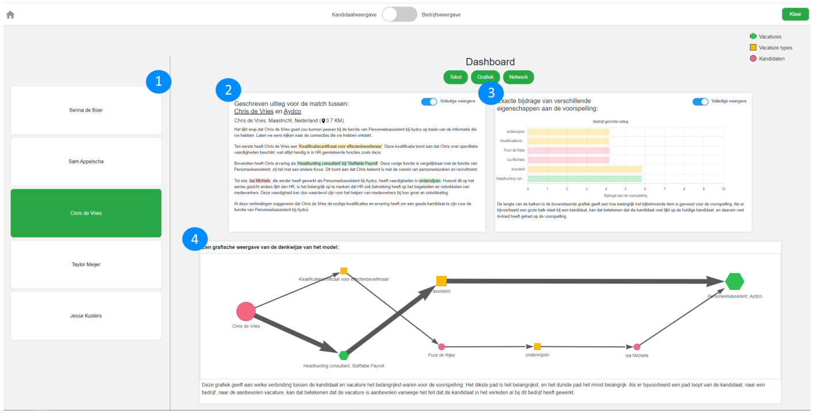

Explainable Multi-Stakeholder Job Recommender Systems (可解释的多利益相关方职位推荐系统)
- 会议/期刊: ACM RecSys 2024（Doctoral Symposium，5 页进展报告）
- 作者与机构: Roan Schellingerhout（Maastricht University；导师 Francesco Barile、Nava Tintarev）
- 推荐链路定位: 解释层 / 决策支持（覆盖召回—排序之后的解释与交互界面）
- 研究方向: 去偏公平与可信隐私 / 图神经网络与知识图谱推荐
- 论文原文: https://arxiv.org/abs/2410.00654v1
- 开源代码: 暂未开源
TL;DR (1分钟核心速览)
本文是一篇博士生论坛的研究议程与阶段性发现报告，而非完整方法论文。针对招聘推荐中求职者（candidate）、企业（company）、HR（recruiter）三方目标冲突且受 GDPR / EU AI Act 强监管的痛点，作者先以 6 人深度访谈 + 30 人（每类 10 人）在线解释环境实验刻画三方解释偏好，再构建基于职业知识图谱的注意力 GNN（OKRA）实现分利益相关方打分与正/负向证据分离。最关键的负结果：用户几乎无法区分真实解释与随机解释（主观指标差异不显著），且真实解释下决策正确率反而下降——据此作者主张解释应从"说服式"转向"决策支持式"。
Background & Motivation (背景与核心矛盾)
- 主流范式: 招聘推荐（JRS）主流做法是 Transformer 文本匹配 CV 与 vacancy 文本；可解释推荐主流是面向单一终端用户的事后解释（attention 可视化、文本理由），目标是提升信任与说服力。
- 前人局限: ① 缺乏多利益相关方视角——求职者关心职业匹配与公平，企业关心人岗效率，HR 关心可向客户复述的论证链条，三者诉求直接冲突，单一解释无法同时服务；② 招聘属高风险域，其"ground truth"由人工 HR 标注，本身不客观，因此以"让用户同意模型"为目标的解释在逻辑上不成立。
- 核心洞察 (Key Insight): 用户在真实决策中并不采纳模型给出的理由，而是叠加自身领域经验独立判断；当解释与用户自身推理冲突时会产生"摩擦"，反而损害决策质量。
- 本文切入点: 用可交互、可单独开关的多模态解释界面承载异质偏好，并将 OKRA 输出的 grounded 证据作为决策支持材料而非说服工具。
Method (核心方法设计)
1. 整体框架 (Overall Architecture)
研究按三个子问题串成闭环：SQ1（访谈 + 原型环境）确定三方解释偏好 → SQ2（OKRA）在职业知识图谱上产出分利益相关方打分与可分离的正/负向证据 → SQ3（拟落地真实系统）在个人化数据上评估有用性、透明度与信任。当前已完成 SQ1 与 SQ2 的离线部分，SQ3 尚未开展，因此下文所述方法多为设计描述而非可复现算法（原文未给出损失函数与打分公式的具体形式）。
flowchart TD
A["CV / Vacancy 文本 + 结构化职业数据"] --> B["职业知识图谱（ISCO 职码、技能、地域等节点）"]
B --> C["OKRA：注意力 GNN + 利益相关方特定输出头"]
C --> D["分方打分与正/负向证据分离"]
D --> E["可交互解释界面（文本/柱状图/图，可单独开关）"]
E --> F["决策支持：用户自主判断"]2. 关键设计拆解 (Key Designs)
- 多利益相关方解释偏好建模（SQ1）：痛点在于既有 XAI 研究默认"一种解释服务所有读者"。作者用约 1 小时/人的半结构化访谈让 6 名参与者共同设计解释形态，发现跨方差异与方内分歧同时存在：candidate 与 recruiter 强烈偏好文本解释（易理解、有"个人感"）；company 代表在理解图解释的读法后转向偏好图结构解释（可一眼总览复杂关系），这被归因于其日常更常处理图表。方内分歧（如 recruiter 对解释详略的要求两极分化）直接推出设计约束：界面必须可交互、按偏好单独开关。对应下图的在线解释环境即该约束的落地形态。

-
OKRA：职业知识图谱上的注意力 GNN（SQ2）：痛点在于纯文本匹配丢弃了结构化职业关系（职码层级、技能共现、地域）中的大量预测力。OKRA 将 CV、vacancy 与职业本体统一建图为异构知识图谱，用注意力聚合邻居，并为 candidate 侧与 company 侧设置独立输出头以容纳"双方并不总是一致"的事实；其解释能力来自注意力权重可按正/负贡献拆分，从而对同一次预测给出多条证据。原文仅给出这一架构级描述，未披露层数、维度、聚合算子与训练目标，故无法复现其公式。
-
从"说服"到"决策支持"的范式转换：这是本文最具增量的观点性贡献。实验显示真实解释既未显著提升信任/透明度，也未提升正确率，说明 persuasive 路线在专业人员面前失效；作者据此提出两条替代准则——① 解释应明确 grounded 在源材料（CV/vacancy 原文）中，若解释引用了 CV 上未写出的结构化信息（如简历未列但库里记录的技能），用户会困惑于信息出处；② 系统目标是支撑而非替代用户的专业判断。
Experimental Setup & Evaluation Protocol (实验设置与评估协议)
- 数据集与预处理: 未使用公开基准。第一阶段用"低质量但公开"的招聘数据做原型；第二阶段改用与某大型国际招聘机构合作获取的人工标注专有数据集。原文未披露任何规模统计、过滤规则或划分方式，故下表只能标注可得信息：
| 数据/实验对象 | 规模 | 划分或设计 | 备注 |
|---|---|---|---|
| 访谈研究（SQ1） | 6 人（每类 2 人） | 半结构化 + 协同设计 | 约 1 小时/人，荷兰语母语者 |
| 原型环境实验（SQ1） | 30 人（每类 10 人） | 被试内设计，真实解释 vs 随机解释，顺序随机化 | 角色扮演：阅读他人 CV/vacancy 后代为决策 |
| OKRA 离线评测（SQ2） | 未披露 | 未披露 | 专有数据集，对比 text-only 与 SOTA graph-based 模型 |
- 数据划分与防穿越: 原文未说明。离线评测的划分协议、是否采用时间切分均缺失，属于评估透明度上的明显短板。
- 排名评测协议: 未说明是 Full-Ranking 还是 Sampled Ranking；亦未报告 NDCG/Recall/HR 等排序指标的具体数值，仅以"显著更好"定性表述。
- 对比基线与超参设置: 基线分为 text-only（Transformer 文本匹配类）与 graph-based（SOTA 图模型）两类；未给出嵌入维度、训练轮次、显著性检验方法与随机种子设置。
Key Experimental Results (实验关键数据)
1. 主实验对比 (Main Results)
原文未提供任何数值表格（属 5 页进展报告的体例限制），仅给出定性结论。下表为可提取的结论性对照，不含量化数字：
| 对比维度 | 结论方向（原文表述） | 证据强度 |
|---|---|---|
| Graph-based vs Text-only JRS | 图模型"strongly outperformed"文本模型 | 定性，无指标 |
| OKRA vs SOTA graph-based | OKRA"significantly better"，代价是训练时间增加 | 定性，无显著性检验 |
| 真实解释 vs 随机解释（主观） | 有用性/信任/透明度仅有上升趋势，不显著 | n=30，未报 p 值 |
| 真实解释 vs 随机解释（客观） | 决策正确率下降 | n=30，未报幅度 |
| 地域公平性 | 多数 SOTA 模型对农村 candidate 与农村 company 存在轻度偏置 | 定性 |
2. 消融实验 (Ablation Study)
原文未设计组件消融。可视为"概念性消融"的是解释类型对比（文本 / 柱状图 / 图）与被试内真实-随机解释对照，其结果见下表。
| 变体 | 主观指标 | 客观指标 | 结论 |
|---|---|---|---|
| 真实（GNN 生成）解释 | 略升（不显著） | 下降 | 真实解释未带来决策增益 |
| 随机（无意义）解释 | 基线 | 略优 | 低摩擦反而"不干扰"用户自有推理 |
| 仅文本解释 | 偏好最高（candidate/recruiter） | 难以辨别细微差异 | 措辞差异（"somewhat" vs "strongly"）被忽略 |
| 图解释 | company 代表偏好上升 | 未单独报告 | 需先教会读图，学习成本高 |
3. 关键实验发现 (Key Findings)
- 解释的"可辨识性"比"正确性"更致命：30 人被试内实验中真实与随机解释的主观指标差异不显著，而最受偏好的文本解释恰恰最难传达注意力权重的细微差别（0.7 与 0.2 若被表述为"中等偏高/略低"则几乎不可辨），说明当前 LLM 生成式理由在区分度上失效。
- 真实解释降低正确率是反向证据：被试倾向于用自己的领域知识覆盖模型理由，解释与自身判断冲突时产生"摩擦"，因此无意义的随机解释反而更少干扰——这直接否证了 persuasive XAI 在专业决策场景的前提。
- 解释必须与源材料可对齐：多名被试对"CV 上未出现却被解释引用"的结构化信息感到困惑；同时作者观察到多数 SOTA 图/文本模型对农村侧双方均存在轻度偏置，提示招聘域需引入区域公平性约束。
Highlights & Limitations (亮点、对比与审稿批判)
- 与代表作对比 (vs. Prior Work): 相较于主流可解释推荐（如单用户视角的 attention 归因、自然语言理由生成），本文的价值不在模型而在问题重构：把"解释是否让人信服"改写为"解释是否支撑专业判断"。相较于常规 JRS（BERT 类 CV-vacancy 匹配），OKRA 通过引入职业知识图谱与分方输出头，主张结构化职业关系被文本模型系统性浪费——这一论断若被量化证实，将直接挑战当前 JRS 的主流技术路线。
- 可迁移亮点: ① "真实 vs 随机解释"的被试内对照是检验解释是否真正被使用的低成本强检验，可迁移到任意 XAI 用户研究；② 解释内容必须 grounded 在用户可见源材料，这一准则对 LLM 生成推荐理由的幻觉抑制同样适用。
- 审稿级局限批判: ① 证据强度严重不足——n=6 访谈与 n=30 原型实验均未报告效应量与显著性检验，OKRA 的性能优势完全依赖定性表述，"显著更好"无可核查依据；② 方法不可复现——OKRA 的知识图谱 schema、注意力聚合、训练目标与损失函数全部缺失，专有数据也使结论无法被独立验证；③ 以角色扮演（阅读他人 CV）代替真实求职决策，存在明显的代入偏差，作者自己亦承认这一点；④ 决策支持与 persuasive 解释的边界并未给出可操作的形式化定义。
Rating (四维评分)
- 方法创新性 (Novelty): ⭐⭐⭐ （问题重构与"决策支持替代说服"的论点有洞察力，但 OKRA 仅为架构级描述，缺少可辨识的算法增量）
- 评估协议与实验扎实度 (Protocol & Experiments): ⭐⭐ （被试内真实/随机对照设计巧妙，但样本仅 30 人且无显著性检验、无任何数值表格，离线评测划分协议完全缺失）
- 写作与数学规范度 (Clarity & Rigor): ⭐⭐⭐ （议程梳理清晰、子问题分解自洽，但全文无一条公式与复杂度分析，"显著"等统计措辞使用不严谨）
- 工业落地与复现价值 (Industrial & Practical Value): ⭐⭐⭐ （与招聘机构合作的专有数据与可切换解释界面具备真实落地形态，但无开源代码、OKRA 训练开销偏高，短期内复现价值有限）